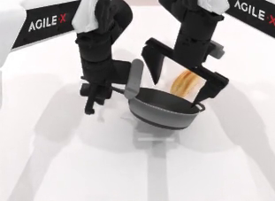
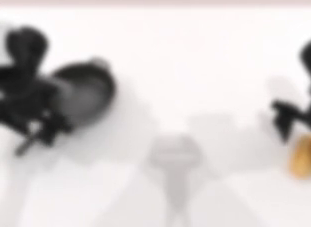
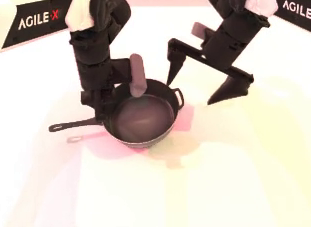
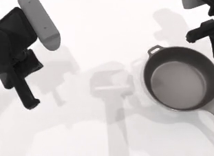
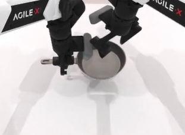
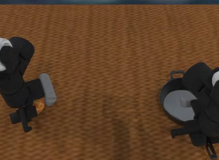
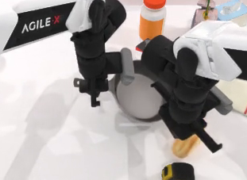
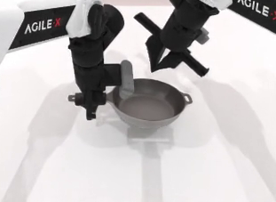

Bimanual Manipulation · VLA Robustness Benchmark
Robustness Testing for Vision-Language-Action Policies via Structured Perturbations
1 Huawei Technologies 2 University of Toronto
Abstract
Robustness is a prerequisite for deploying Vision-Language-Action (VLA) and World Action Model (WAM) policies beyond the conditions they were trained in. RoboTwin-Plus is the benchmark introduced in our study Do World Action Models Generalize Better than VLAs? A Robustness Study — a structured perturbation suite of seven perturbation dimensions spanning twenty-one sub-dimensions across object layout, background texture, lighting, camera viewpoint, robot initial state, language instruction, and sensor noise. Built on the RoboTwin 2.0 bimanual manipulation platform, every perturbation is applied per episode through a single declarative configuration and is fully backward compatible: features activate only when their keys are present, so existing configs behave identically. The result is a reproducible protocol for measuring how a policy's success degrades — one clean baseline plus seven perturbation branches over all fifty tasks.
Perturbation Suite

Deterministic layout, default lighting and camera, original instructions.

Motion, gaussian, zoom, glass blur, and fog on camera observations.

Diffuse color, direction, specular highlights, and shadow toggling.

Head-camera viewpoint pose: distance, spherical position, orientation.

Gaussian noise on initial joint angles plus gripper extremes.

Wall, floor, and table textures, colors, and surface materials.

Task-irrelevant distractor objects and target-object pose noise.

Distraction, common-sense rewording, and reasoning-chain rephrasing.
Usage
Data collection uses a single command pattern. A GPU is required.
# bash collect_data.sh <task_name> <config_name> <gpu_id> # Clean baseline — no perturbation bash collect_data.sh beat_block_hammer demo_clean 0 # A perturbation branch, e.g. lighting (L1–L4) bash collect_data.sh beat_block_hammer demo_light 0
Install with bash script/_install.sh, then download assets with
bash script/_download_assets.sh. See the
README for the full setup.
Evaluation Protocol
A full evaluation uses 8 configs per task: one clean baseline plus seven perturbation branches. Each branch activates exactly one dimension while holding the others at their clean defaults, isolating its effect on policy performance. Each config runs 50 episodes per task, across all 50 RoboTwin 2.0 dual-arm tasks.
| # | Config | Perturbation | Active sub-dimensions |
|---|---|---|---|
| 0 | demo_clean | None (clean baseline) | — |
| 1 | demo_vision_noise | Sensor Noise | N1–N5 (cycled per episode) |
| 2 | demo_light | Lighting | L1 (always) + L2 / L3 / L4 (stochastic) |
| 3 | demo_camera | Camera Viewpoints | C1 + C3 (C2 disabled by default) |
| 4 | demo_robot_state | Robot Initial State | Joint noise + gripper extremes |
| 5 | demo_background_plus | Background | B1 (texture + color tint) + B2 |
| 6 | demo_objects_plus | Objects Layout | O1 (variable count) + O2 (pose) |
| 7 | demo_language_plus | Language | R1 + R2 + R3 (combined) |
Perturbation taxonomy. Each dimension decomposes into sub-dimensions, individually configurable via YAML flags for combined or ablation-style evaluation. Table 2 lists all 21 sub-dimensions with implementation-level parameters.
| Dimension | Code | Sub-dimension | Implementation details |
|---|---|---|---|
| Sensor Noise | N1 | Motion blur | Gaussian kernel (r ∈ [3, 15], σ ∈ [1, 8]), rotated by a random angle ∈ [−30°, 30°] |
| N2 | Gaussian blur | Isotropic Gaussian (σ ∈ [1, 10]) | |
| N3 | Zoom blur | Multi-scale warp accumulation (s ∈ [1.0, 1.56], step ∈ [0.01, 0.03]) | |
| N4 | Fog | Homogeneous white fog with transmittance e−αd (α ∈ [0.3, 1.5], d = 3) | |
| N5 | Glass blur | Pixel displacement (δ ∈ [1, 5] px) + Gaussian (σ ∈ [0.5, 2.5]), 1–3 iterations | |
| Light Conditions | L1 | Diffuse color | Per-channel RGB tint ∈ [0.0, 3.5] applied to all directional and point lights (always on) |
| L2 | Direction | Spherical re-sampling: θ ∈ [8°, 82°], φ ∈ [0, 2π]; 35% chance of dramatic side lighting (θ ∈ [68°, 82°]). Linked with L4 | |
| L3 | Specular | Material specular strength ∈ [0.3, 6.0], shininess ∈ [10, 250]; all scene actors (50% chance per episode) | |
| L4 | Shadows | Directional-light shadow on/off (50% chance); co-activated with L2 | |
| Camera Viewpoints | C1 | Distance | Distance scaling ∈ [0.85, 1.0] × original (head camera only) |
| C2 | Spherical position | Azimuth / elevation ± 10° + ± 10% distance variation (disabled by default) | |
| C3 | Orientation | Yaw / pitch / roll each ∈ [0°, 5°] with random sign | |
| Robot Init States | — | Joint perturbation | Gaussian noise (std = 0.1 rad, clip ± 0.225 rad) on all joints of both arms; gripper set to extreme (0.05 or 0.95) with p = 0.25 |
| Background Textures | B1 | Scene theme | Wall + floor RGB color tint, per-channel multiplier ∈ [0.4, 1.8]; combined with upstream texture swap |
| B2 | Surface appearance | Table material: metallic ∈ [0.0, 0.8], roughness ∈ [0.05, 0.95], per-channel color tint ∈ [0.4, 1.8] | |
| Objects Layout | O1 | Distractor objects | Variable count per episode (3–15 objects, vs. fixed 10 in upstream) |
| O2 | Target pose | Position: Gaussian noise (σ = 2 cm, x/y only); orientation: uniform yaw ± 15° | |
| Language Instructions | R1 | Distraction | Irrelevant conversational wrapping (~30% of combined episodes) |
| R2 | Common-sense rewording | Object names → functional descriptions, verb synonyms (~50%) | |
| R3 | Reasoning chain | Imperative → goal-state / outcome description (~20%) |
Citation
If you use RoboTwin-Plus, please cite our paper along with RoboTwin 2.0.